PromiseHub · Video 79
Configure the organization
The profile, the logo and the defaults of the modules that are on, all on Settings › Organization
The profile, the logo and the defaults of the modules that are on, all on Settings › Organization

/settings → /settings/organization · a card per module default while it is on · every Edit opens a dialog · ADR 0073
Contact email, phone and time zone.
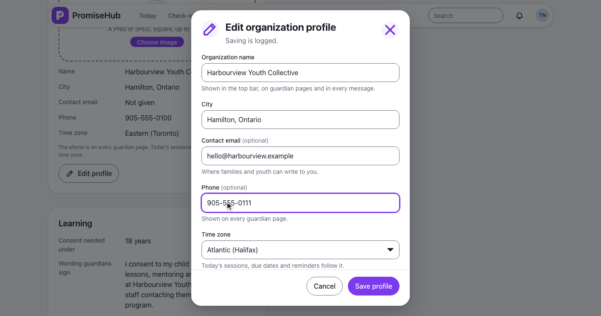
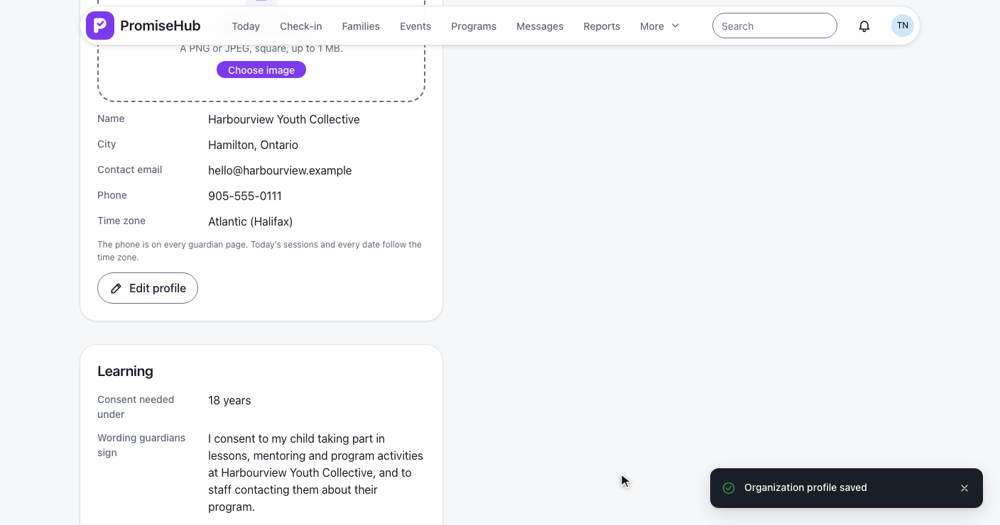
PUT /settings/organization/profile · OrganizationProfileHandler · L2-122
A PNG accepted, a PDF refused.
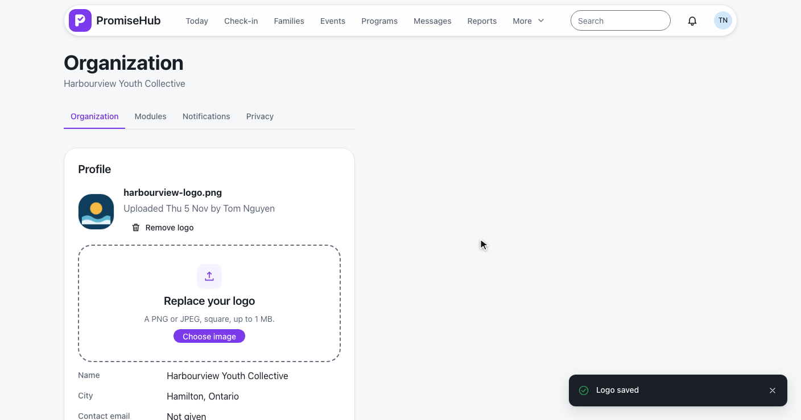
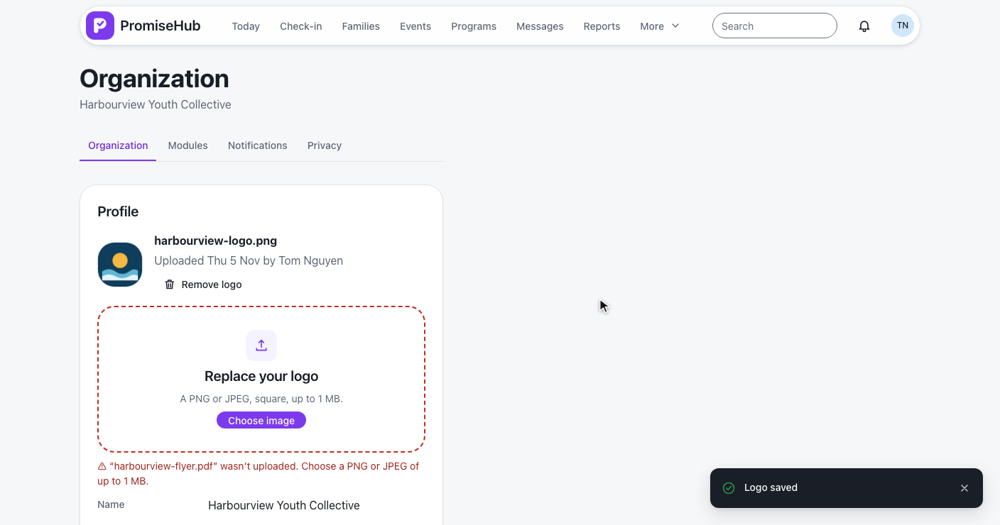
PNG or JPEG by first bytes · 1 MB · logos/{organization}/{random} · SVG refused · L2-123
Consent, cadence, website.
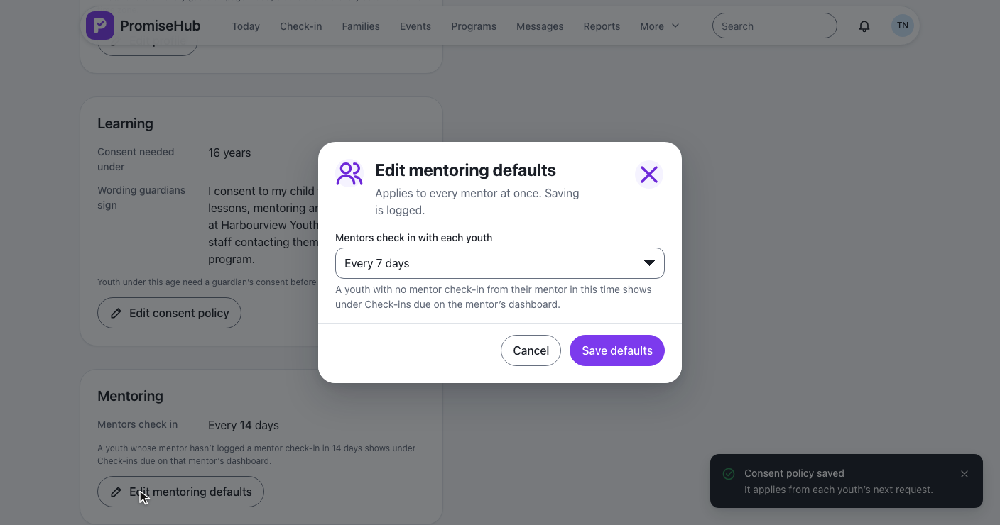
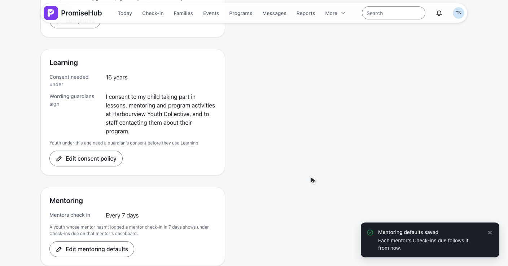
PUT /settings/mentoring · 7, 14, 21 or 30 days · Mentoring only · L2-125
Every 14 days, then every 7.
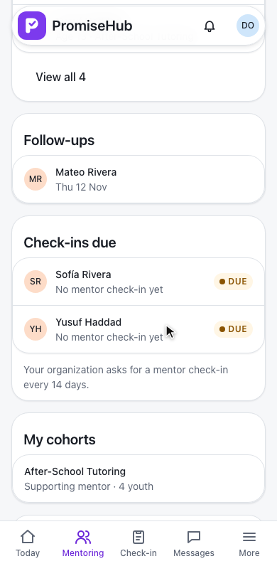
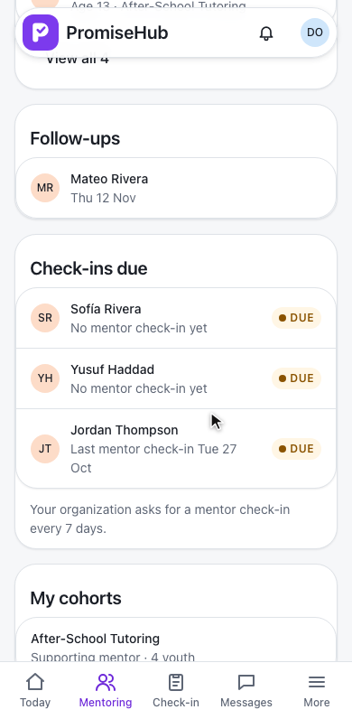
GET /mentoring/dashboard · checkInEveryDays · checkInsDue · his own check-ins only
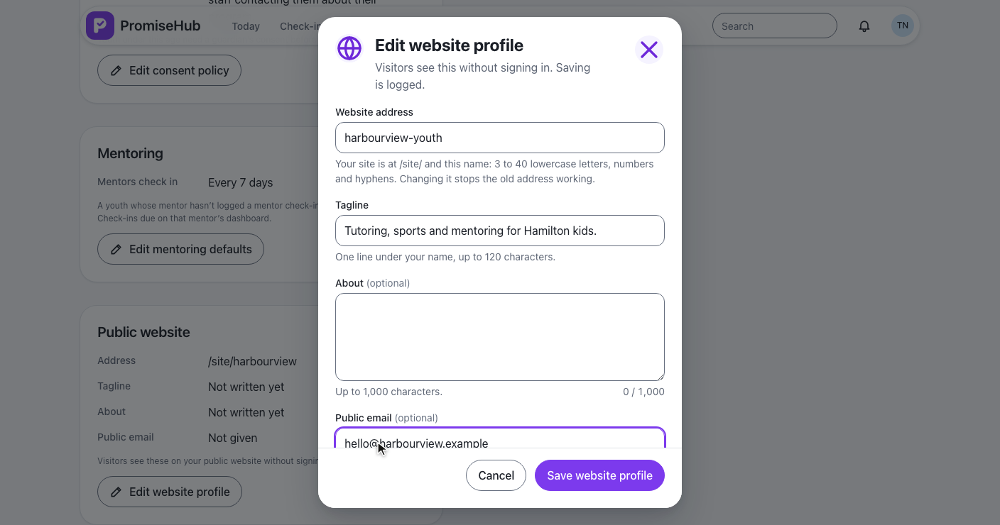
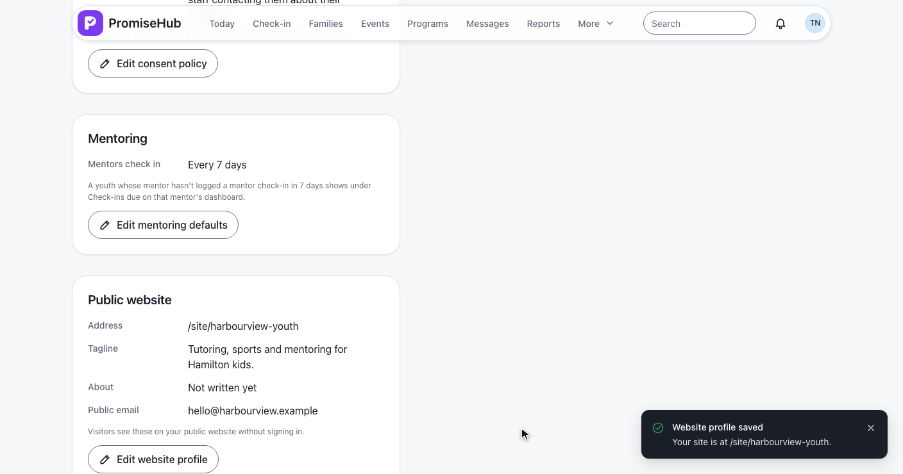
PUT /settings/website · unique address · GET /website/{address} · L2-126
Northgate, Jaylen, the dialogs.
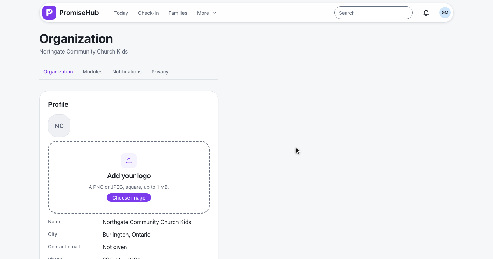
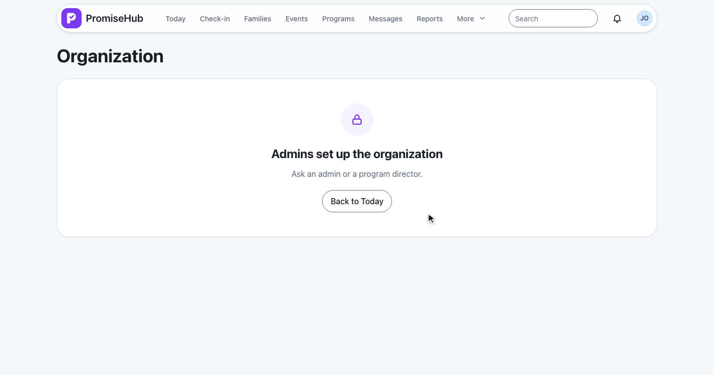
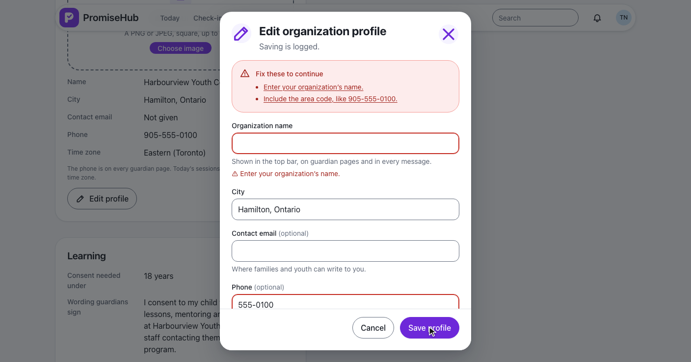
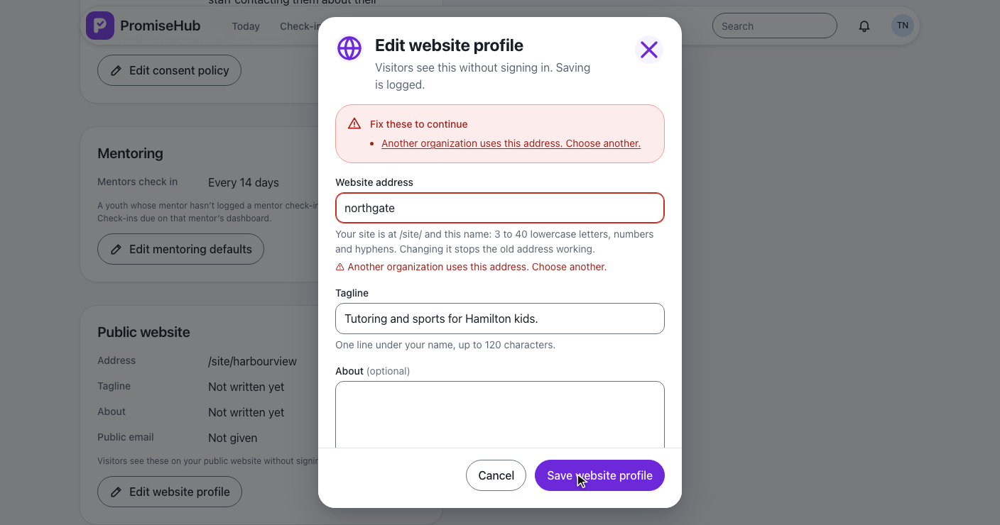
OrganizationProfileTests, OrganizationLogoTests: fields, files, audit, roles, tenancyLearningSettingsTests, MentoringSettingsTests, WebsiteProfileTests: module gates, Check-ins due, the unique addressorganization-profile, organization-logo, organization-module-defaults, mentor-check-ins-due specs with axe
Next: report, export and import learning data